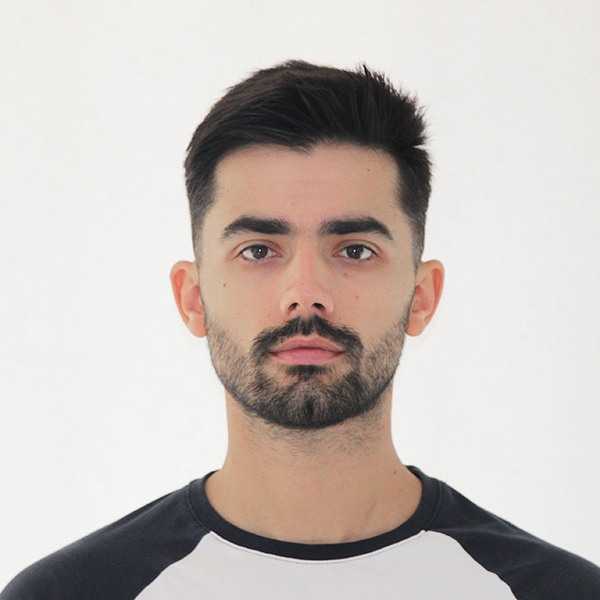

VIKTOR
MITROFANOV

Summary
I am a hard working individual with
strong desire for perfection and invovation.
Education
- PGT "Nikola Vaptsarov" from 2008 to 2013
- Academy of MVR from 2013 to 2017
- Unibit from 2024 to 2025
Work Experience
-
Crimes agianst the person - SDVR
From 2017 to 2018
Title: Inspector
- Carried investigations related to murders and kidnaping
- Carried OSINT analysis
- Technical support for interogations
-
Cybercrime Department - GDCOC
From 2018 to 2024
Title: Inspector
- Carried investigations related to Cyberattacks
- Carried OSINT analysis
- Computer forensics
Skills
- Critical thinking
- Analytical skills
- Computer programming
Awards and Certifications
Other